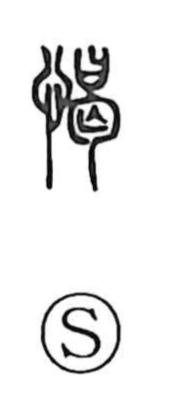

憩

Uncategorized
Kun: ikoi, ikou | On: kei
rest ・ to rest ・ repose
Explanation
Shirakawa identifies the original form of this word as 愒, a phono-semantic character in which 曷 serves as the phonetic element that signals the on-reading kei, while the sense centers on breathing and repose. The Shuowen glosses 愒 as “to breathe,” from which the meaning “to rest” naturally follows; the Er Ya similarly defines 憩 as “to breathe,” showing that 愒 and 憩 share the same core idea. The later, commonly used graph 憩 writes this meaning more pictorially by combining 息 “breath” and 舌 “tongue,” evoking a pause to catch one’s breath, and it functions as the popular counterpart to the older 愒.